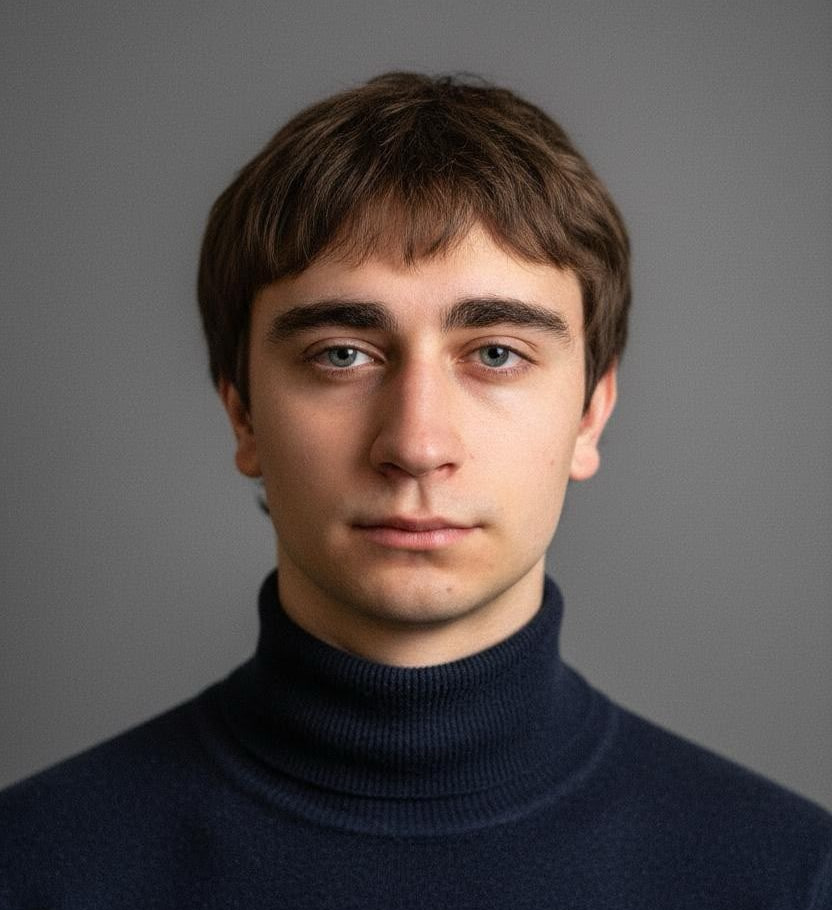

I am an 18-year-old tech enthusiast with a lifelong passion for digital creation. My journey began in childhood with video editing in After Effects and Alight Motion, which naturally evolved into a deep fascination with IT, system integration, and the fundamentals of programming. I thrive on creativity and pride myself on my ability to quickly master new software and technologies.
Backed by a strong foundation in exact sciences like algebra and geometry, I possess a sharp spatial imagination and a strong memory. My current tech stack includes VS Code, GitHub, HTML, and CSS, and I am constantly expanding my skill set. My work philosophy is simple: extreme attention to detail and a methodical, step-by-step approach to project construction. I don't just write code or configure systems; my goal is to deliver high-quality, unique, and polished results.
Currently based in Germany, my main objective is to start an Ausbildung as a Fachinformatiker für Systemintegration. I am highly driven, open to complex challenges, and constantly pushing myself to grow into a top-tier professional. I am ready for the future, and I am ready to build it.
I am always open to new opportunities, challenges, and interesting conversations.
Email: krasokhade@gmail.com
GitHub: github.com/skv1ce
Telegram: @skv1ce
Instagram: @skv1ce